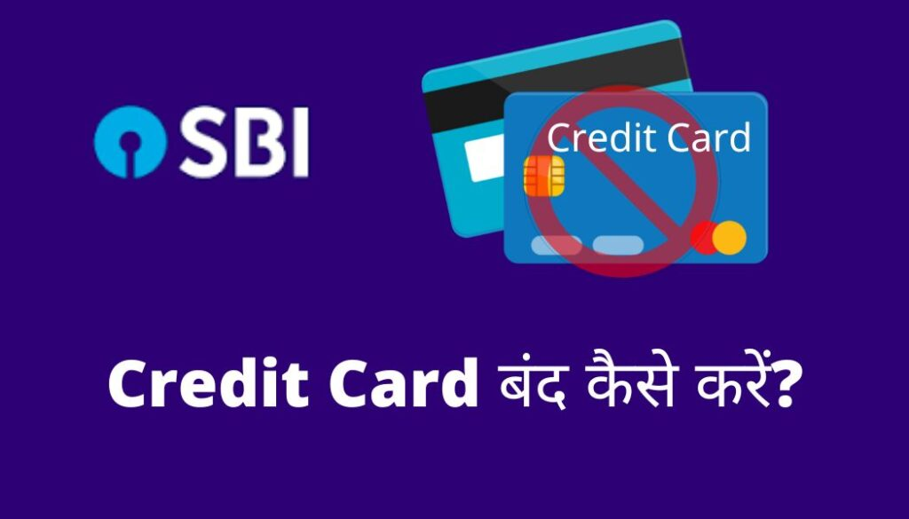

SBI Credit Card band kaise kare : नमस्कार दोस्तों स्वागत हैं आपका अपना हिंदी ब्लॉग Loankaise.in में।आज इस आर्टिकल के माध्यम से आप जानेंगे कि अगर आपके पास भारतीय स्टेट बैंक (State Bank Of Indian) का credit कार्ड हैं और आपका क्रेडिट कार्ड किसी कारण से खो गया हैं या किसी ने चोरी कर लिया हैं या आप इसके अधिक खर्चे से परेशान हैं तो आप अपने State Bank of India के credit कार्ड को बंद कैसे कर सकते हैं? ताकि भविष्य में आने वाली समस्या से बचा जा सके। तो आइये इस आर्टिकल के माध्यम से समझने की कोशीस करते हैं कि SBI Credit Card band kaise kare, इसके बारे में स्टेप बाय स्टेप पूरी प्रक्रिया नीचे पुरे विस्तार से बताया गया हैं, इसके लिए आर्टिकल को अंत तक पढ़े।
{kind=link}

यह भी पढ़े
एसबीआई क्रेडिट कार्ड को बंद करने के लिए क्या करे ?
अगर आप अपने credit कार्ड के खर्चो से परेशान हैं या आपका credit कार्ड कही खो गया है या चोरी हो गया हैं तो आपको सबसे पहले स्टेट बैंक के नजदीकी शाखा में जाकर credit कार्ड को बंद करने के अनुरोध करना होगा या फिर बैंक के तरफ से दिए गए ईमेल के माध्यम से भी ईमेल भेजकर अपना credit कार्ड को बंद कर सकते हैं जो की बहुत ही सरल प्रक्रिया हैं या फिर बैंक के तरफ से प्रदान किये गए कस्टमर केयर से बात करके आप अपना credit कार्ड को बंद कर सकते हैं
या फिर अगर आप नेट बैंकिंग का उपयोग करते हैं तो आप अपना credit कार्ड को अधिकारिक वेबसाइट के ईमेल के माध्यम से भी बंद कर सकते हैं इसके लिए आपको नेट बैंकिंग में लॉग इन करना होगा और credit कार्ड को बंद करने का अनुरोध करना होगा उसके बाद मांगे गए जरुरी जानकारी को भरकर customercare@sbicard.com पर मेल भेजकर रिक्वेस्ट कर सकते हैं |
ईमेल के माध्यम से अपना SBI Credit Card band kaise kare?
यदि आप सोच रहे हैं credit कार्ड को बंद कैसे करे तो आप ईमेल के माध्यम से सरल तरीको से अपना credit कार्ड को बंद कर सकते हैं | इसके लिए स्टेट बैंक के तरफ से एक ईमेल दिया जाता हैं जिसमे आप credit कार्ड को बंद करने के लिए ईमेल भेजा जाता हैं, जो बहुत ही आसान प्रक्रिया हैं | इस तरह आप ईमेल भेजकर एसबीआई क्रेडिट कार्ड बंद (sbi credit card band) कर सकते है |
SBI Credit Card Close Process in Hindi | SBI credit कार्ड को बंद करने का तरीका
अगर आपका स्टेट बैंक का credit कार्ड कहीं खो गया हैं या फिर अधिक खर्चे से परेशान हैं तो आप इन तरीको को अपनाकर अपना credit कार्ड को बंद करा सकते हैं, जिसकी स्टेप की पूरी प्रक्रिया नीचे दी गयी हैं |
1.बैंक में जाकर सरेंडर करे
2. कस्टमर केयर से बात करके credit कार्ड को बंद करे|
1.बैंक में जाकर सरेंडर करें
अगर आप अपना credit कार्ड को बंद कराना चाहते हैं तो स्टेट बैंक के नजदीकी शाखा में जाकर बैंक अधिकारी द्वारा अपना स्टेट बैंक credit कार्ड को बंद करने का अनुरोध कर सकते हैं | credit कार्ड को बंद करने के लिए आपको अपने साथ बैंक के सभी दस्तावेज को लेकर जाना होगा | इसके द्वारा बैंक के तरफ से आपको credit कार्ड को बंद करने के लिए एसबीआई क्रेडिट कार्ड क्लोजर फॉर्म ऑनलाइन(SBI Credit card closer form online) को भरना होगा | इस्कर लिए आपको इसके ऑफिसियल वेबसाइट पर जाना होगा और कैंसिलेशन फॉर्म को भरकर सबमिट कर देना होगा | फिर बैंक के तरफ से बैंक कर्मचारी credit कार्ड बंद करने के कारण के बारे में जानने के लिए संपर्क करेगा फिर आपके कैंसिल विवरण की पुष्टि करेगा |
2. कस्टमर केयर से बात करके credit कार्ड को बंद करे
credit कार्ड को बंद करने के लिए बैंक के तरफ से दिए गए हेल्पलाइन नंबर के मदद से भी अपना credit कार्ड को बंद कर सकते हैं, इसके लिए आपको 18601801290/18605001290/18001801290/39020202 नंबर पर कॉल करके कस्टमर केयर एक्जीक्यूटिव आपसे कार्ड को बंद करने का रिक्वेस्ट करना होगा जिसपर कस्टमर केयर एक्जीक्यूटिव आपसे कुछ विवरण मांगेंगे | यह कस्टमर केयर नंबर 24×7 सक्रिय हैं।
Credit कार्ड को बंद करने का नुकसान
अगर आप अपना credit कार्ड को बंद करते हैं तो आपको कुछ नुकसान का सामना करना पड़ सकता हैं जिसे नीचे बताया गया हैं |
- अगर आप अपना credit कार्ड को बंद करने के अनुरोध करते है तो उसके पहले अपना credit कार्ड का सभी बकाया का भुगतान करना होगा नहीं तो आपका credit स्कोर भी बहुत नीचे गिर जाएगा |
- अगर आप बंद करने से पहले credit कार्ड का बकाया का भुगतान नहीं करते तो इन पर ब्याज और लेट पेनाल्टी भी लगायी जाती हैं |
- अगर आपके credit कार्ड के द्वारा किसी भी चीज का subscription लिए हैं तो अपना credit कार्ड बंद करने से पहले सभी सब्सक्रिप्शन को हटा दे नहीं तो credit कार्ड के द्वारा ऑटो payment ले लिया जाता हैं और आपके credit कार्ड पर due ही शो करता हैं जिससे आपको ब्याज के साथ साथ पेनाल्टी भी लग सकती हैं |
एसबीआई बैंक क्रेडिट कार्ड बंद करते समय ध्यान रखने योग्य बातें
- अगर आपके SBI credit कार्ड में बकाया राशि है तो सबसे पहले आपको Dues amount को paid करना होगा क्योकि SBI आपको अपना credit कार्ड बंद करने से पहले dues amount paid करवाएगा।
- Credit कार्ड को बंद करने से पहले नवीनतम बकाया स्टेटमेंट की जाँच कर ले कही आपका कुछ बकाया तो नहीं रह गया हैं यह फिर आपके कार्ड से कोई धोखाधड़ी का लेनदेन तो नहीं हुआ हैं |
- अगर आप credit कार्ड को बंद करना चाहते हैं तो उसके लिए आपको credit कार्ड का उपयोग नहीं करना हैं क्यूंकि नवीनतम लेनदेन के बाद credit कार्ड बंद करने की मंजूरी नहीं देती हैं |
- credit कार्ड के द्वारा अर्जित किये गए पॉइंट की भी जाँच कर लेनी होगी और कार्ड को बंद करने से पहले सभी पॉइंट को Redeem कर लेना होगा |
- credit कार्ड को बंद करने के अनुरोध देने के बाद credit कार्ड का इस्तेमाल नहीं करना चाहिये |
- यदि आपके credit कार्ड पर कोई बकाया बाकी हैं तो बैंक आपके क्रेडिट कार्ड को बंद करने की प्रक्रिया को आगे नहीं बढ़ाएगा |
सारांश
मैं आशा करता हूँ की आपको मेरी यह जानकारी पसंद आई होगी, अगर आपको मेरी यह जानकारी पसंद आई ,तो आप इसे Like करे और अपने दोस्तों, Family और Whatsapp ग्रुप में जरुर शेयर करे ताकि उन्हें भी इसकी जानकारी मिल सके |
धन्यवाद !!
SBI Credit Card Band क्यों करें?
अगर आपका क्रेडिट कार्ड खो गया है या इसके बिल से परेशान हैं तो आप अपने Sbi Credit कार्ड को बंद कर सकते हैं।
क्रेडिट कार्ड बंद करने के लिए बैंक जाना ज़रूरी है ?
नहीं आप घर बैठे भी बिना बैंक गए क्रेडिट कार्ड को बंद करवा सकते है।